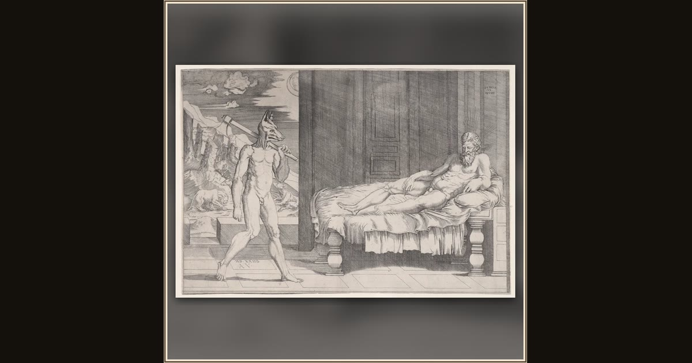

Lycaon Transformed into a Wolf
Agostino Veneziano (Agostino dei Musi) · 1524 · met
An engraving shows a wolf-headed Lycaon before a reclining man; Socrates likens the people’s protector to a man who becomes a wolf after tasting human flesh (565e). Explore its place in Plato's Republic, Book VIII, section 114.